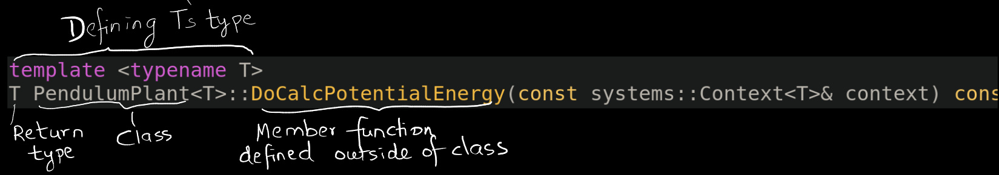

CalcTotalEnergy(const systems::Context<T>& context)

systems::Context<double>& pendulum_context = diagram->GetMutableSubsystemContext(*pendulum, &simulator.get_mutable_context());
const double initial_energy = pendulum->CalcTotalEnergy(pendulum_context);